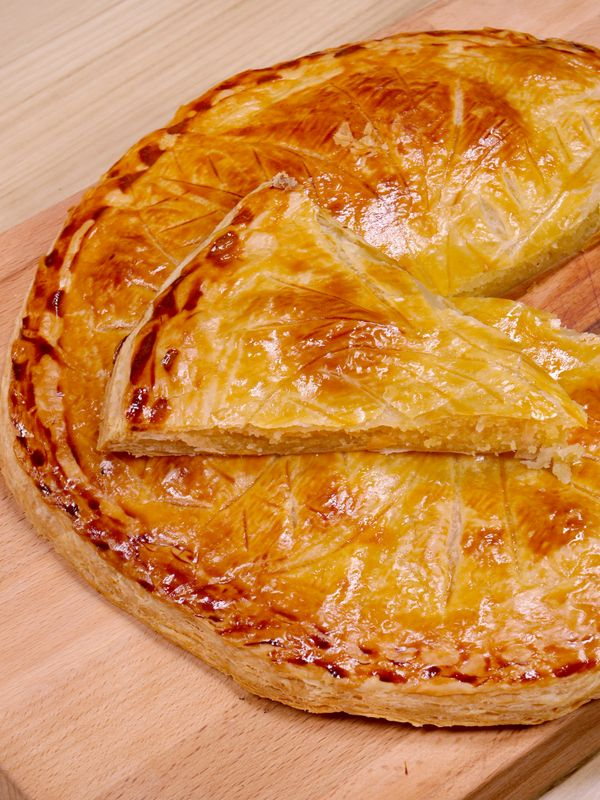

Difficultée :
Facile
Ingrédients :
- 75g de beurre tendre
- 100g de sucre fin
- 1 pâte feuilletées
- 140g d'amandes en poudre
- 2 oeufs
- 1 jaune d'oeuf
- 1 fève
Préparation :
- Placer une pâte feuilletée dans un moule à tarte, piquer la pâte avec une fourchette.
- Dans un saladier, mélanger la poudre d'amandes, le sucre, les 2 oeufs et le beurre mou.
- Placer la pâte obtenue dans le moule à tarte et y cacher la fève.
- Recouvrir avec la 2ème pâte feuilletée, en collant bien les bords.
- Faire des dessins sur le couvercle et badigeonner avec le jaune d'oeuf.
- Enfourner pendant 20 à 30 min à 200°C (thermostat 6-7); vérifier régulièrement la cuisson !

Informations Nutritionnelles :
Pour 100g :
- Calories : 456
- Glucides : 35.7g
- Protéines : 8.8g
- Lipides : 30.4g
Noter la recette :
★
★
★
★
★